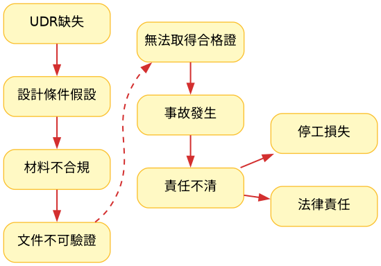

設計條件判斷
設計條件錯誤的危險
1. 概述
在壓力容器設計與認證過程中，多數風險並非來自計算錯誤， 而是來自：
「錯誤的設計條件起點」
若設計條件未被明確定義， 則後續所有設計、製造與檢驗，皆建立於不可靠基礎之上。
2. ⚠️ 工程案例：設計錯誤的真正來源
事故背景
一家化學工廠的管殼式反應器，在歲修後重新啟動時， 因啟動程序造成異常壓力差，導致管側多處斷裂。
事故後：
- 化學廠 → 認為設計製造錯誤
- 製造廠 → 認為操作失誤
最終通報勞檢單位介入。
🔍 問題根源（設計階段）
❌ 1. UDR 未建立
- 使用者設計需求（UDR）未明確提供
- 啟動 / 停機 / 異常工況未定義
- 設計依賴假設
→ 設計基礎不成立
❌ 2. 材料規範不一致
- 宣稱使用 ASME CODE
- 實際採用 CNS 材料
- 無等效性分析（equivalency evaluation）
→ 規避設計驗證流程
❌ 3. 文件無法成立
- 設計條件未定義
- 材料未驗證
- 操作條件未記錄
→ 無法提供完整技術文件 → 無法通過檢驗 → 未取得使用合格證
💥 事故後的工程困境
授權檢查員（A.I.）要求提供 FEA 報告， 證明設備在設計條件下安全。
但實際情況：
- 無完整設計條件
- 無 UDR
- 無材料驗證依據
→ 無法建立分析模型 → 無法進行工程驗證
這不是分析困難，而是「沒有可分析的條件」
3. 📉 風險鏈分析
圖 1：壓力容器設計條件缺失導致的風險傳導路徑分析

關鍵問題不是設計錯誤，而是設計從錯誤前提開始。
壓力容器設計責任
4. 📘 使用者設計需求（UDR）
UDR 是設計的起點，而非附加文件。
1️⃣ 安全與失效模式
- 爆裂、洩漏、破壞
- 異常工況（startup / shutdown / upset）
2️⃣ 法規路徑
- ASME / PED / CNS / TSG
- 必須於設計初期確立
3️⃣ 設計條件
- 設計壓力 / 溫度
- 瞬態條件（Transient）
- 壓差條件（Differential pressure）
4️⃣ 材料選用
- ASME 材料 vs CNS 材料
- 等效性驗證（非經驗判斷）
5️⃣ 壽命與失效
- 疲勞（Fatigue）
- 蠕變（Creep）
- 腐蝕（Corrosion allowance）
6️⃣ 製造可行性
- 焊接能力
- 熱處理限制
- 製造尺寸限制
7️⃣ 檢測與維護
- NDT 策略
- 開孔與檢修設計
- 可維護性
8️⃣ 經濟性
在滿足所有安全與法規條件後進行最佳化
5. 🎯 工程判斷提醒
若出現以下情況：
- 設計條件不明確
- 客戶僅提供概略資料
- 規範尚未確定
- 材料選用存在疑問
你不是在設計設備， 而是在承擔未定義風險。
6. 👉 下一步建議
先建立 UDR 再開始設計 最後才進行驗證
否則：
後續所有工作，都只是放大錯誤成本